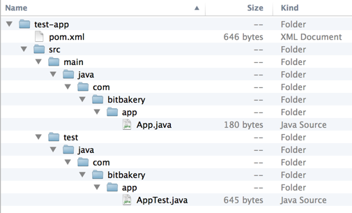
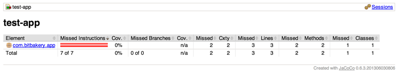
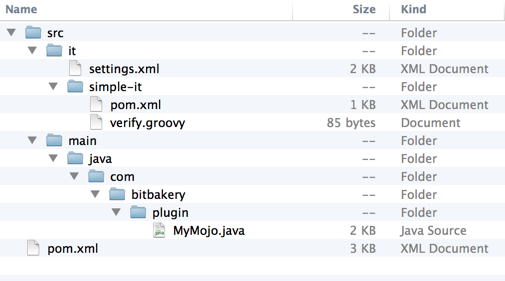

Maven is a Java-based build tool, enabling developers to compile, test, package and deploy software. Although superficially similar to other build tools like Ant, Maven eliminates much of the common boilerplate code that exists in most Ant scripts, and adds additional functionality above and beyond Ant - in particular, Maven adds sophisticated declarative dependency management (similar to Ivy). As long as you follow certain conventions in how your project is structured, Maven accomplishes all of this with minimal configuration.
Maven is freely available at http://maven.apache.org. On Windows, simply download the latest binaries and unzip into your directory of choice. On Linux or Mac OS X, you may choose to simply download and untar, or else use a package manager such as apt-get or brew. After you've installed Maven, check that it's working:
We'll start by creating the sample Java project shown in Maven in 5 Minutes:
...and so on. As this is the first time we've ever run Maven, it must download a lot of dependencies, so let's take a break from the endless stream of download messages. Go get a cup of coffee, and we'll pick up again right about... here...
As Yogi Berra once said, "you can observe a lot just by watching." In executing this one command, we've actually learned quite a bit about how Maven works:
Running the archetype:generate goal with our input parameters generated an archetypal Java project:
This is the standard project structure for Maven projects. You can override where these things are actually located by overriding defaults in the project descriptor, otherwise known as the Project Object Model (POM) (however, you'll find that it's much easier to use Maven when you accept how it wants to structure your project). Note that Maven generated a POM (appropriately named pom.xml) in the root of our project directory tree.
The POM uniquely identifies a project to Maven, describes its contents and dependencies, and specifies how it should be built, tested, packaged and deployed. A complicated project will understandably have a more complicated POM file, but let's examine what we have thus far:
<project xmlns="http://maven.apache.org/POM/4.0.0" xmlns:xsi="http://www.w3.org/2001/XMLSchema-instance" xsi:schemaLocation="http://maven.apache.org/POM/4.0.0 http://maven.apache.org/maven-v4_0_0.xsd"> <modelVersion>4.0.0</modelVersion> <groupId>com.bitbakery.app</groupId> <artifactId>test-app</artifactId> <packaging>jar</packaging> <version>1.0-SNAPSHOT</version> <name>test-app</name> <url>http://dev.the-super-test-app.com</url> <dependencies> <dependency> <groupId>junit</groupId> <artifactId>junit</artifactId> <version>3.8.1</version> <scope>test</scope> </dependency> </dependencies> </project>
OK... so what are we looking at?
| modelVersion | Specifies the version of the Maven POM specification to which this POM file conforms |
| groupId artifactId version |
Together provide a globally unique identifier for this project in the world of Maven (these are sometimes called the coordinates of the project) |
| name | Enables us to give the project a more descriptiive name than what we specify for the artifactId |
| packaging | Tells Maven how we would like our project to be packaged - built-in options include pom, jar, maven-plugin, ejb, war, ear, rar, par (the default is jar) |
| url | The home page for the project |
| dependencies | Specifies the Maven coordinates for any projects on which this project depends |
Using the information in the POM, Maven determines how to build the project. As a concrete example, in order to make our build artifacts more platform-independent, let's add a property entry to our POM to tell Maven to use UTF-8 encoding:
<project xmlns="http://maven.apache.org/POM/4.0.0" xmlns:xsi="http://www.w3.org/2001/XMLSchema-instance" xsi:schemaLocation="http://maven.apache.org/POM/4.0.0 http://maven.apache.org/maven-v4_0_0.xsd"> <modelVersion>4.0.0</modelVersion> <groupId>com.bitbakery.app</groupId> <artifactId>test-app</artifactId> <packaging>jar</packaging> <version>1.0-SNAPSHOT</version> <name>test-app</name> <url>http://maven.apache.org</url> <properties> <project.build.sourceEncoding>UTF-8</project.build.sourceEncoding> </properties> <dependencies> <dependency> <groupId>junit</groupId> <artifactId>junit</artifactId> <version>3.8.1</version> <scope>test</scope> </dependency> </dependencies> </project>
Any Maven plugin which generates text files will now output UTF-8 encoded text.
Maven defines a default lifecycle for projects (from "Introduction to the [Maven] Build Cycle"):
| 1 | validate | Validates the project is correct and all necessary information is available |
| 2 | compile | Compiles the source code of the project |
| 3 | test | Tests the compiled source code using a suitable unit testing framework. These tests should not require the code be packaged or deployed |
| 4 | package | Takes the compiled code and package it in its distributable format, such as a JAR. |
| 5 | integration-test | Processes and deploys the package if necessary into an environment where integration tests can be run |
| 6 | verify | Runs any checks to verify the package is valid and meets quality criteria |
| 7 | install | Installs the package into the local repository, for use as a dependency in other projects locally |
| 8 | deploy | When run in an integration or release environment, this typically copies the final package to the remote repository for sharing with other developers and projects |
As a sanity check for our newly-generated project, let's tell Maven to package our project, and observe the relationship between the default lifecycle and what's specified in our POM file. Since this is the first time we've packaged anything with Maven, we'll once again download a lot of dependencies, so in the interest of brevity, we'll actually run our package goal twice (cleaning up after the first run), and only examine the output of the second run:
We see that Maven executed those portions of the default lifecycle which were applicable to our project. Note that we do not have to run through the entire lifecycle every time - we can choose other goals. Some goals may be utility goals completely outside of the normal lifecycle, or sometimes we may choose to run through only part of the lifecycle:
Our generated POM file included a single dependency: JUnit 3.8.1. Although we ignored it above, if you happened to look closely at the output when you ran mvn package for the very first time, you may have noticed this output:
Maven did this because the dependencies declaration in our POM file told Maven that we needed JUnit 3.8.1, and we didn't already have it in our local repository:
<project xmlns="http://maven.apache.org/POM/4.0.0" xmlns:xsi="http://www.w3.org/2001/XMLSchema-instance" xsi:schemaLocation="http://maven.apache.org/POM/4.0.0 http://maven.apache.org/maven-v4_0_0.xsd"> <modelVersion>4.0.0</modelVersion> <groupId>com.bitbakery.app</groupId> <artifactId>test-app</artifactId> <packaging>jar</packaging> <version>1.0-SNAPSHOT</version> <name>test-app</name> <url>http://maven.apache.org</url> <properties> <project.build.sourceEncoding>UTF-8</project.build.sourceEncoding> </properties> <dependencies> <dependency> <groupId>junit</groupId> <artifactId>junit</artifactId> <version>3.8.1</version> <scope>test</scope> </dependency> </dependencies> </project>
Furthermore, if JUnit itself had required any dependencies that we didn't already have in our local repository, Maven would have fetched those as well, and so on. But how did Maven know where to look for these dependencies? Maven will first look for dependencies in the local repository, which by default is located in ~/.m2/repository (as with most things in Maven, this can be customized - the location of the local repository can be specified in ~/.m2/settings.xml). The local repository contains the actual library files (jar files, usually) as well as POM files for those libraries:
If Maven can't find a required dependency in the local repository, then by default it will then look in the Maven central repository, which contains virtually every third-party Maven plugin that you might want. The central repository is at http://repo1.maven.org/maven2, which is defined in the Super POM, but can be overridden if necessary - either in your project's POM file, or else in your local settings.xml file. The central repository is helpful when working on an open source project, but when working in a corporate environment, you'll typically use an internal repository (such as Artifactory or Nexus), specified in the project POM file:
<project xmlns="http://maven.apache.org/POM/4.0.0" xmlns:xsi="http://www.w3.org/2001/XMLSchema-instance" xsi:schemaLocation="http://maven.apache.org/POM/4.0.0 http://maven.apache.org/maven-v4_0_0.xsd"> <modelVersion>4.0.0</modelVersion> <groupId>com.bitbakery.app</groupId> <artifactId>test-app</artifactId> <packaging>jar</packaging> <version>1.0-SNAPSHOT</version> <name>test-app</name> <url>http://maven.apache.org</url> <properties> <project.build.sourceEncoding>UTF-8</project.build.sourceEncoding> </properties> <dependencies> <dependency> <groupId>junit</groupId> <artifactId>junit</artifactId> <version>3.8.1</version> <scope>test</scope> </dependency> </dependencies> <repositories> <repository> <id>my-internal-site</id> <url>http://myserver/repo</url> </repository> </repositories> </project>
An internal repository will contain other internal projects on which your project depends, and can also mirror external third-party dependencies.
We usually require precise control over our dependency versions, but sometimes it's not necessary. Maven allows us to specify a version range, which can even be open-ended. For example, if we wanted to use JUnit version 3.8.1 or higher, in our POM file we could specify:
<project xmlns="http://maven.apache.org/POM/4.0.0" xmlns:xsi="http://www.w3.org/2001/XMLSchema-instance" xsi:schemaLocation="http://maven.apache.org/POM/4.0.0 http://maven.apache.org/maven-v4_0_0.xsd"> <modelVersion>4.0.0</modelVersion> <groupId>com.bitbakery.app</groupId> <artifactId>test-app</artifactId> <packaging>jar</packaging> <version>1.0-SNAPSHOT</version> <name>test-app</name> <url>http://maven.apache.org</url> <properties> <project.build.sourceEncoding>UTF-8</project.build.sourceEncoding> </properties> <dependencies> <dependency> <groupId>junit</groupId> <artifactId>junit</artifactId> <version>[3.8.1,)</version> <scope>test</scope> </dependency> </dependencies> </project>
Note that this will download all of the versions of JUnit between 3.8.1 and the most current, but will then use the most current version.
What we've seen thus far will service the needs of most Java projects. But sometimes we'll need more than what a standard Maven installation provides; a good example would be the generation of any platform-specific configuration files. To accomplish this, within our POM we must specify (and configure) a plugin which can accomplish this goal. For example, let's add the Jacoco Maven plugin to tell us what kind of code coverage we're getting from our unit testing:
<?xml version="1.0"?> <project xmlns="http://maven.apache.org/POM/4.0.0" xmlns:xsi="http://www.w3.org/2001/XMLSchema-instance" xsi:schemaLocation="http://maven.apache.org/POM/4.0.0 http://maven.apache.org/maven-v4_0_0.xsd"> <modelVersion>4.0.0</modelVersion> <groupId>com.bitbakery.app</groupId> <artifactId>test-app</artifactId> <packaging>jar</packaging> <version>1.0-SNAPSHOT</version> <name>test-app</name> <url>http://maven.apache.org</url> <properties> <project.build.sourceEncoding>UTF-8</project.build.sourceEncoding> </properties> <dependencies> <dependency> <groupId>junit</groupId> <artifactId>junit</artifactId> <version>[3.8.1,)</version> <scope>test</scope> </dependency> </dependencies> <build> <plugins> <plugin> <groupId>org.jacoco</groupId> <artifactId>jacoco-maven-plugin</artifactId> <version>0.6.3.201306030806</version> <executions> <execution> <id>default-prepare-agent</id> <goals> <goal>prepare-agent</goal> </goals> </execution> <execution> <id>default-report</id> <phase>prepare-package</phase> <goals> <goal>report</goal> </goals> </execution> </executions> </plugin> </plugins> </build> </project>
Within the build element, we can bind the execution of a plugin goal to a particular phase of the build lifecycle. Note that we see one execution that is not explicitly bound to a phase; in this case the execution is bound to its default phase (this makes sense; Jacoco can only instrument the compiled classes at a very particular spot in the build lifecycle, and thus isn't meaningfully configurable).
There can also exist a reporting element within the POM, which is very similar to the build element, but is used for goals which are run within the site phase, which generates project reports and documentation. Whether plugin configuration is defined in the build or the reporting element simply depends on the nature of the plugin.
To see Jacoco in action, we'll first clean out any previously generated files and then package our app (note that we can specify multiple Maven goals, which are satisfied in order). If this is the first time you've used the Jacoco plugin, Maven will download it, along with its dependencies. What we're especially interested in here, however, are the additions to the build cycle:
We see that by simply including the Jacoco Maven plugin as part of the build, and binding certain goals to certain execution phases (while relying on the default phases for other Jacoco goals), the Jacoco plugin instrumented our code, gathered coverage metrics during test execution, and generated an HTML report of our unit test code coverage:
...and opening index.html in a browser, we see our coverage report:
(Note that this report is expected, since the JUnit test generated by Maven isn't yet actually doing anything.)
We probably don't want code coverage every time we build. For example, we may just want to build and deploy a small change to see what it looks like when we run it. By wrapping our Jacoco configuration within a profile, we will only generate code coverage when we include the profilewe can choose to include the plugin's behavior (this is especially appropriate for our example; we probably don't want to generate code coverage reports all of the time).
<?xml version="1.0"?> <project xmlns="http://maven.apache.org/POM/4.0.0" xmlns:xsi="http://www.w3.org/2001/XMLSchema-instance" xsi:schemaLocation="http://maven.apache.org/POM/4.0.0 http://maven.apache.org/maven-v4_0_0.xsd"> <modelVersion>4.0.0</modelVersion> <groupId>com.bitbakery.app</groupId> <artifactId>test-app</artifactId> <packaging>jar</packaging> <version>1.0-SNAPSHOT</version> <name>test-app</name> <url>http://maven.apache.org</url> <properties> <project.build.sourceEncoding>UTF-8</project.build.sourceEncoding> </properties> <dependencies> <dependency> <groupId>junit</groupId> <artifactId>junit</artifactId> <version>[3.8.1,)</version> <scope>test</scope> </dependency> </dependencies> <profiles> <profile> <id>with-jacoco</id> <build> <plugins> <plugin> <groupId>org.jacoco</groupId> <artifactId>jacoco-maven-plugin</artifactId> <version>0.6.3.201306030806</version> <executions> <execution> <id>default-prepare-agent</id> <goals> <goal>prepare-agent</goal> </goals> </execution> <execution> <id>default-report</id> <phase>prepare-package</phase> <goals> <goal>report</goal> </goals> </execution> </executions> </plugin> </plugins> </build> </profile> </profiles> </project>
...and now to generate code coverage, we simply include the profile:
...and so on - the same output that we saw previously, before we added our profile. If we were to now run mvn clean package without including our profile, Jacoco would be ignored.
Complicated projects will sometimes require complicated build steps which do not fit neatly into Maven's worldview. To handle such cases, we can write our own Maven plugins, and then use them just as we would use any other Maven plugin. To get started, we can use Maven to create an archetypal Maven plugin project:
...which creates a skeleton Java project for developing a Maven plugin:
Looking at MyMojo.java, we see the basic elements of the Maven plugin API:
package com.bitbakery.plugin; import org.apache.maven.plugin.*; import org.apache.maven.plugins.annotations.*; import java.io.*; /** * Goal which touches a timestamp file. */ @Mojo( name = "touch", defaultPhase = LifecyclePhase.PROCESS_SOURCES ) public class MyMojo extends AbstractMojo { @Parameter(defaultValue = "${project.build.directory}", property = "outputDir", required = true) private File outputDirectory; public void execute() throws MojoExecutionException { File f = outputDirectory; if (!f.exists()) { f.mkdirs(); } File touch = new File(f, "touch.txt"); FileWriter w = null; try { w = new FileWriter(touch); w.write("touch.txt"); } catch (IOException e) { throw new MojoExecutionException( "Error creating file " + touch, e ); } finally { if ( w != null ) { try { w.close(); } catch ( IOException e ) { // ignore } } } } }
Maven plugin development is a topic unto itself. More information can be found at http://maven.apache.org/plugin-developers/index.html
If we're behind a proxy server, then we'll need to configure Maven accordingly in order to download dependencies from a remote repository:
Enter the following (using your proper URL, port, username and password, of course) and save:
<settings> <proxies> <proxy> <active>true</active> <protocol>http</protocol> <host>proxy.somewhere.com</host> <port>8080</port> <username>proxyuser</username> <password>somepassword</password> <nonProxyHosts>www.google.com|*.somewhere.com</nonProxyHosts> </proxy> </proxies> </settings>
See http://maven.apache.org/guides/mini/guide-proxies.html for more information.